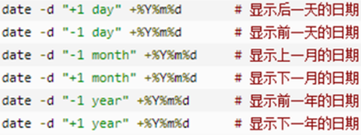
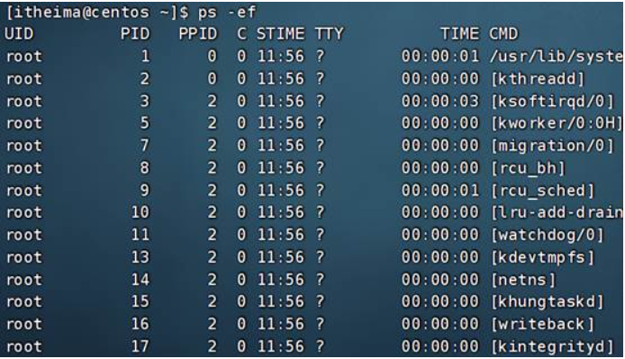
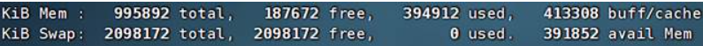
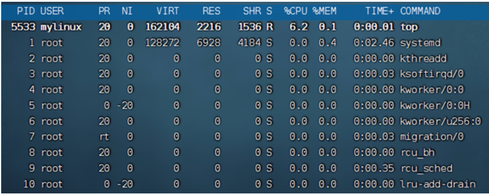
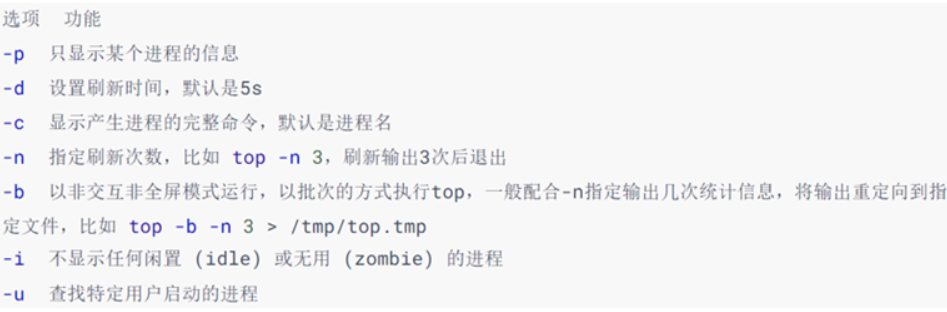
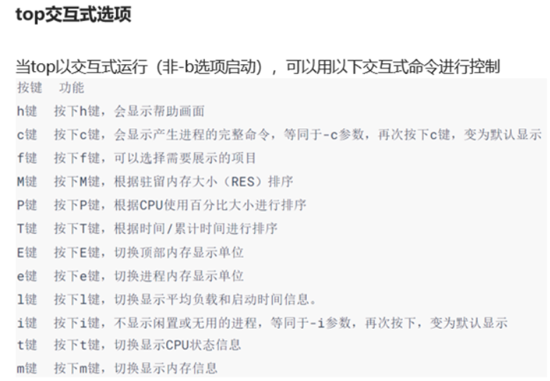
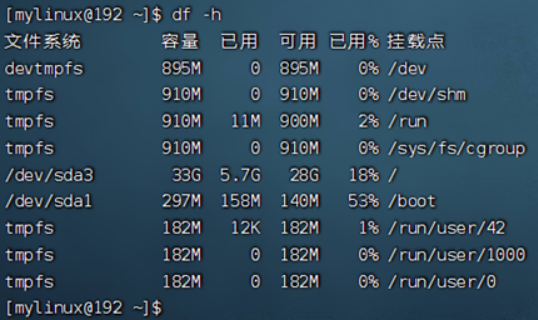
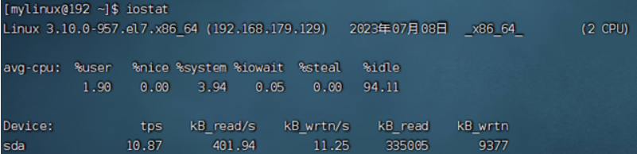
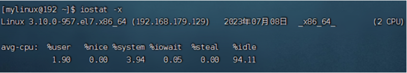

Linux 的实用操作
4-1. 常用快捷键
强制停止：当某些程序运行时，或者命令输入错误时，可以通过 ctrl + c 来强制结束当前的操作。
退出或登出：当我们要退出某些用户时，或者要退出某些特殊的页面可以使用 ctrl + d 来进行。（vi/vim 不可用）
历史命令搜索：通过输入 history 命令来查看之前输入过的命令。也可通过 **!** 命令前缀 自动自行上一次 匹配前缀的命令，例如：!ls。也可通过 ctrl + r 搜索历史命令。
光标移动快捷键：ctrl + a 跳到命令开头 ctrl + e 跳到命令结尾 ctrl + ← 向左挑一个单词
ctrl + → 向右跳一个单词
清屏：ctrl + l 清空终端中的内容，使用命令 clear 可以得到相同效果。
4-2. 软件安装 (Centos7)
语法格式：
yum [-y] [install | remove | search] 软件名称
-y 代表自动确认安装过程中的各种确认。
install 安装
remove 卸载
search 搜索
注意：
yum 命令需要 root 权限，并且 yum 需要联网，普通用户可使用 sudo yum。
4-3. 开启 / 关闭服务 (systemctl 命令)
类似于 window 任务管理器中的服务选项中的内容，该命令可以开启和关闭 Linux 中的各种服务。控制开 机自启的服务。
语法格式：
systemctl start | stop | status | enable | disable 服务名
start 启动
stop 关闭
status 查看状态
enable 开启开机自启
disable 关闭开机自启
常用服务：
NetworkManger 主网络服务
network 副网络服务
firewalld 防火墙服务
sshd ssh （FinalShell 远程登录 Linux 所使用的服务）
4-4. 软连接 (快捷方式)
跟 window 中的快捷方式差不多
语法格式：
ln -s 参数 1 参数 2
-s 创建软连接
参数 1 被链接的文件或者文件夹
参数 2 要链接去的目的地
4-5. 日期，时区
通过 date 命令来查看当前 Linux 中的时间
语法格式：
**date [-d] [** 格式化字符串]
-d 按照给定的字符串显示日期，一般用于日期的计算。
支持的时间标记为：
year 年
month 月
day 天
hour 小时
minute 分钟
second 秒

格式化字符串 通过特定的字符串标记，用来控制日期的显示格式。
% Y 年
% y 年份后两位数字
% m 月份
% d 日
% H 小时
% M 分钟
% S 秒
% s 自 1970-01-01 00:00:00 UTC 到现在时间的秒数。
4-6. 主机名，IP 修改
修改主机名指令：
hostname 查看主机名
hosthomectl set-hostname 主机名 修改主机名
修改完后可以重新链接 linux 系统来查看主机名。
ip 修改：这是一个坑，等以后学会了再回来填
4-7. 网络传输与端口
ping 命令（检测网络是否连通，并且检测延迟）：
ping [-c num] ip**** 或者主机名
-c 代表检测目标的次数，如果不使用则会一直检测，使用则需要指定检测次数。
num 设置检测次数，需要搭配 - c 使用
ip 或主机名 你们要检测的网站，主机，ip 等待
wget 命令（非交互式文件下载器，在命令行内下载网络文件）：
wget [-b] url
-b 可选，后台下载，会将下载日志写入到 wget-log 日志文件中
url 统一资源定位器
curl 命令（下载文件，获取信息）：
curl [-O] url
-O 用于下载文件，如果 url 是下载链接则会保存文件
url 统一资源定位器
端口占用情况查看：
第一 先安装 nmap 软件 yum -y install nmap
第二 输入 nmap 被查看的 ip 地址 进行查看
也可以安装 netstat 软件来查看指定的端口占用情况。 yum -y install net-tools
之后通过 netstat -anp | grep 端口号 来查看具体占用情况。
4-8. 进程管理
这个跟 window 中的进程一样
进程查看命令：
ps [-e -f]
-e 显示全部进程
-f 以完全格式化的形式展示信息
下面的图片中从左到右分别是：
UID：进程所属的用户 ID
PID：进程的进程号 ID
PPID：进程的父 ID（启动此进程的其它进程）
C：此进程的 CPU 占用率（百分比）
STIME：进程的启动时间
TTY：启动此进程的终端序号，如显示？，表示非终端启动
TIME：进程占用 CPU 的时间
CMD：进程对应的名称或启动路径或启动命令

可以使用管道符来筛选和查看指定的进程的信息。
ps -ef | grep 关键字 即可查看与关键字相干的进程信息。
进程关闭命令：
kill [-9] 进程 ID
-9 表示强制关闭，否则进程是否关闭取决于进程的管理机制。
4-9. 主机状态
类似于 window 任务管理器中的主机资源占用情况，比如 cpu 的占用，内存的占用。
cpu，内存使用情况查看命令：
top 输入后每 5 秒刷新一次，输入 q 或者 ctrl + c 退出
内容详解：
第一行
top：命令名称，
14:39:58：当前系统时间，
up 6 min：启动了 6 分钟，
2 users：2 个用户登录，
load：1、5、15 分钟负载
第二行
Tasks：175 个进程，
1 running：1 个进程子在运行，
174 sleeping：174 个进程睡眠，0 个停止进程，0 个僵尸进程
第三行
% Cpu (s)：CPU 使用率，
us：用户 CPU 使用率，
sy：系统 CPU 使用率，
ni：高优先级进程占用 CPU 时间百分比，
id：空闲 CPU 率，
wa：IO 等待 CPU 占用率，
hi：CPU 硬件中断率，
si：CPU 软件中断率，
st：强制等待占用 CPU 率
第四行和第五行
Kib Mem：物理内存，
total：总量，
free：空闲，
used：使用，
buff/cache：buff 和 cache 占用
KibSwap：虚拟内存（交换空间），
total：总量，
free：空闲，
used：使用，
buff/cache：buff 和 cache 占用
top 内容详解：

・PID：进程 id
・USER：进程所属用户
・PR：进程优先级，越小越高
・NI：负值表示高优先级，正表示低优先级
・VIRT：进程使用虚拟内存，单位 KB
・RES：进程使用物理内存，单位 KB
・SHR：进程使用共享内存，单位 KB
・S：进程状态（S 休眠，R 运行，Z 僵死状态，N 负数优先级，I 空闲状态）
・% CPU：进程占用 CPU 率
・% MEM：进程占用内存率
・TIME+：进程使用 CPU 时间总计，单位 10 毫秒
・COMMAND：进程的命令或名称或程序文件路径


磁盘信息查看命令：
df [-h]
-h 可以以更人性化的单位显示

iostat 命令：
iostat [-x] [num1] [num2]
-x 显示更多信息
num1 刷新间隔（数字） num2 刷新次数（数字）

tps 为该设备每秒的传输次数，"一次传输" 意思是 "一次 I/O 请求"。
使用 iostat 的 - x 选项可以显示更多信息。

rrqm/s： 每秒这个设备相关的读取请求有多少被 Merge 了（当系统调用需要读取数据的时候，VFS 将请求 发到各个 FS，如果 FS 发现不同的读取请求读取的是相同 Block 的数据，FS 会将这个请求合并 Merge, 提高 IO 利用率，避免重复调用）；
wrqm/s： 每秒这个设备相关的写入请求有多少被 Merge 了。
rsec/s： 每秒读取的扇区数；sectors
wsec/： 每秒写入的扇区数。
rKB/s： 每秒发送到设备的读取请求数
wKB/s： 每秒发送到设备的写入请求数
avgrq-sz 平均请求扇区的大小
avgqu-sz 平均请求队列的长度。毫无疑问，队列长度越短越好。
await： 每一个 IO 请求的处理的平均时间（单位是微秒毫秒）。
svctm 表示平均每次设备 I/O 操作的服务时间（以毫秒为单位）
% util： 磁盘利用率
网络状态监控：
使用 sar 命令查看网络的相关统计。
sar -n DEV num1 num2
-n 查看网络，DEV 表示查看网络接口
num1 刷新间隔（不填就查看一次结束） num2 查看次数（不填无限次数）

如图，查看 2 次，隔 3 秒刷新一次，并最终汇总平均记录
信息解读：
IFACE 本地网卡接口的名称
rxpck/s 每秒钟接受的数据包
txpck/s 每秒钟发送的数据包
rxKB/S 每秒钟接受的数据包大小，单位为 KB
txKB/S 每秒钟发送的数据包大小，单位为 KB
rxcmp/s 每秒钟接受的压缩数据包
txcmp/s 每秒钟发送的压缩包
rxmcst/s 每秒钟接收的多播数据包
4-10. 环境变量
通过一个关键字，让其指定一个路径，之后通过该关键字访问到目的地址的东西就是环境变量。比如程序 运行过程中需要访问某某文件夹下的内容，但是如果让程序每次访问的时候挨个硬盘检索要读取的内容是不现 实的，所以可以让程序通过某些特定的关键字（环境变量）来快速访问指定的目录。
linux 中的环境变量采用键值型结构，即关键字为键，指定的路径为值，键可以映射到值上。
环境变量查看命令：
env 查看当前系统中记录的环境变量
环境变量取值：
$ 环境变量 获取取环境变量的值，可以通过 echo $ 环境变量 来打印环境变量所指向的目录。
如果想要通过 echo 打印环境变量的同时打印其他东西可以：echo ${环境变量} 其他内容
自行设置临时生效的环境变量：
export 变量名 = 变量值
自行设置永久生效的环境变量：
针对当前用户生效：配置在当前用户的用户目录里～/.bashrc 文件中
针对所用用户生效：配置在系统目录根中里 /etc/profile 文件中
之后通过语法：source 配置文件 即可立即生效。或者重启链接软件。
在环境变量中用一个变量是 PATH，它记录了系统指向任何命令是的搜索路径，在 linux 中，任何命令本质 上是一个可执行程序，假如我们输入 cd 命令，那么系统会查看 PATH 中记录的所有路径中是否有 cd 这个可 执行程序，如果有则执行 cd，没有则说找不到该命令。
自定义临时环境变量 PATH：
**export PATH = $PATH:** 文件目录
自定义永久环境变量 PATH：
修改方法一：
通过修改.bashrc 文件:
vim ~/.bashrc
在最后一行添上：
**export PATH=** 链接:$PATH
关闭当前终端窗口，重新打开一个新终端窗口就能生效
有效期限：永久有效
用户局限：仅对当前用户
修改方法二:
通过修改 profile 文件:
vim /etc/profile
/export PATH // 找到设置 PATH 的行，添加
**export PATH=** 链接:$PATH
生效方法：系统重启
有效期限：永久有效
用户局限：对所有用户
4-11. 解压缩
后缀为 tar 和 gz 的是 linux 常用的压缩格式。
tar 只是将文件组织到一个 tar 文件内，没有太多的体积压缩，只是简单地做一下封装。
gz 即使用 gzip 压缩算法将文件压缩到一个文件内，可以极大的减少压缩后的体积。
tar 命令的语法：
tar [-c -v -x -f -z -C] 参数 1 参数 2 … 参数 n
-c，创建压缩文件，用于压缩模式
-v，显示压缩、解压过程，用于查看进度
-x，解压模式
-f，要创建的文件，或要解压的文件，-f 选项必须在所有选项中位置处于最后一个
-z，gzip 模式，不使用 - z 就是普通的 tarball 格式
-C，选择解压的目的地，用于解压模式
压缩例子：
将 1.txt 2.txt 3.txt 压缩到 test.tar 文件内。
tar -cvf test.tar 1.txt 2.txt 3.txt
将 1.txt 2.txt 3.txt 压缩到 test.tar 文件内，并且使用 gzip 模式。
tar -zcvf test.tar 1.txt 2.txt 3.txt
注意：
-z 选项如果使用的话，一般处于选项位第一个
-f 选项，必须在选项位最后一个
解压例子：
将 test.tar 解压至当前目录。
tar -xvf test.tar
解压 test.tar 将文件解压到指定目录。
tar -xvf test.tar -C /home/mylinux
以 Gzip 模式解压 test.tar 将文件解压到指定目录。
tar -zxvf test.tar.gz -C /home/mylinux
注意：
-f 选项，必须在选项组合体的最后一位
-z 选项，建议在开头位置
-C 选项单独使用，和解压所需的其它参数分开
zip 压缩命令：
zip [-r] 参数 1 参数 2 … 参数 n
-r 如果被压缩的文件包含文件夹时，需要加上这个。
unzip 解压命令：
unzip [-d] 参数
-d 指定要解压去的位置，与 tar 的 - C 选项一致。
参数 被解压的 zip 压缩包文件。